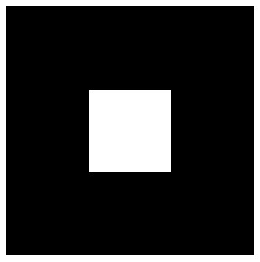

TP - tapis de Sierpiñsky#
Présentation#
Le tapis de Sierpiñsky est une figure obtenue à partir d’un carré.
À l’ordre 1, on partage ce carré en 9 carrés identiques et on retire le carré central.
À l’ordre 2, on recommence ce procédé sur les 8 carrés restants : on les partage en 9 carrés et on retire le carré central.
On continue jusqu’à l’ordre désiré. Ici jusqu’à l’ordre n=3.
On obtient une figure, appelée tapis de Sierpiñsky:

Pour représenter ce tapis, on va utiliser le module turtle.
Construction du motif#
Dans un premier temps, on écrit une fonction qui dessine un carré respectant le motif du tapis de Sierpinsky:
dessine un carré noir de côté c=360
à l’intérieur de ce carré, on dessine un carré blanc.
On obtient la figure:
Écrire une fonction motif_tapis qui réalise ce motif.
Représenter le tapis#
Le dessin du tapis est une situation récursive. Il faut représenter un motif, plusieurs fois, avec des dimensions réduites, dans des carrés dont il faut déterminer le coin inférieur gauche.
Le dessin récursif du tapis commence par les motifs les plus petits :
On appelle la fonction pour dessiner le grand tapis;
La fonction va s’appeler elle-même une première fois pour dessiner un motif plus petit dans l’un de ces huit carrés à dessiner. Elle met en attente dans une pile d’appels les autres appels de la fonction;
On recommence jusqu’à atteindre le cas de base qui dessine un premier motif. Ensuite, on dépile la pile d’appels et on continue le script.
Ici, on a dessiné le plus petit motif en bas à gauche du tapis.
On considère la fonction récursive tapisser qui a pour paramètre l’ordre n du motif à tracer, la position x et y du coin inférieur gauche du carré où on dessine le motif et cote qui est la longueur du côté du motif carré.
Sur le motif initial, ci-dessus, le carré est d’ordre 3. Ce carré a été partagé en 9 carrés. On va reproduire ce motif dans plusieurs carrés.
Si le côté du carré mesure 360 et que le coin inférieur gauche a pour coordonnées (0,0), quelles sont les coordonnées des coins inférieurs gauches des carrés qui recevront le motif ?
Combien d’appels récursifs sont nécessaires pour reproduire le motif ?
Pour obtenir le tapis d’ordre 3, quel sera l’appel de la fonction récursive ?
Le cas de base se réalise lorsque l’ordre n=1. Comment se réalise-t-il ?
Écrire la fonction récursive tapisser qui permet de dessiner ce tapis.
[ ]: